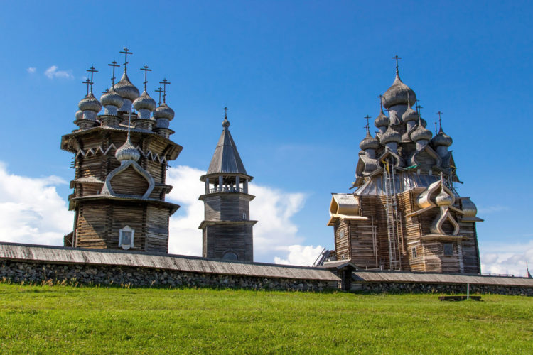

13. Архитектурный ансамбль Кижи (Петрозаводск)

Всякий путешественник, задумывающийся над тем, что посетить в России и в Карелии, выбирает поездку в Кижи. Добраться от Петрозаводска до архитектурного ансамбля Кижи можно за полтора часа на катере. Сейчас здесь находится музей деревянного зодчества. Однако,его могло бы и не быть, если бы в XV веке здесь не возник Спасо-Кижский погост. В то время погостом называли не кладбище, а единицу территориального деления. В Кижах тогда располагалось 130 деревень. Сначала были построены зимняя и летняя церкви, сгоревшие позже при пожаре. Архитектурный ансамбль, знакомый многим сегодня, построили только в XVIII веке. Строительство началось с девятиглавой Покровской церкви. До сегодняшнего времени сохранился ее уникальный иконостас. Самая знаменитая достопримечательность России в Кижах – церковь Преображения Господня. Ее 22 купола изображают на многочисленных русских сувенирах, посуде, полотенцах. Говорят, что при ее строительстве гвозди не использовали, но это не так. Всего архитектурный ансамбль состоит их двух церквей и большой колокольни с 33 куполами, символизирующими количество лет, прожитых Спасителем.